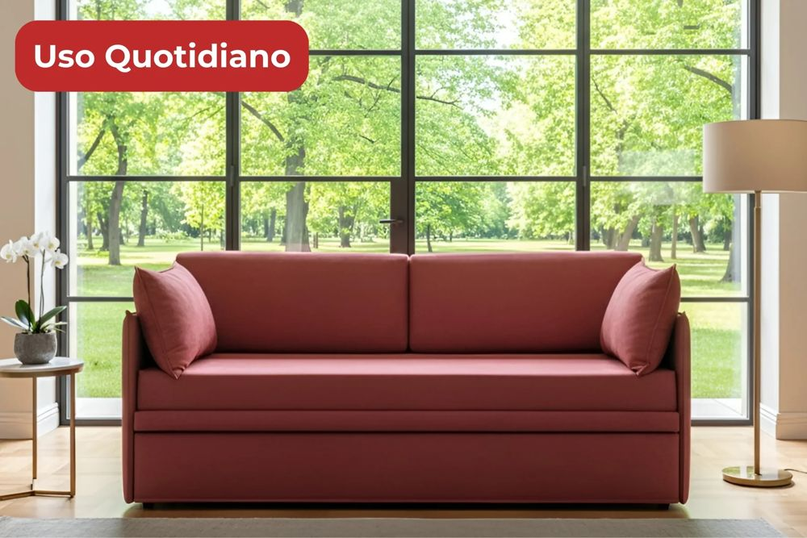
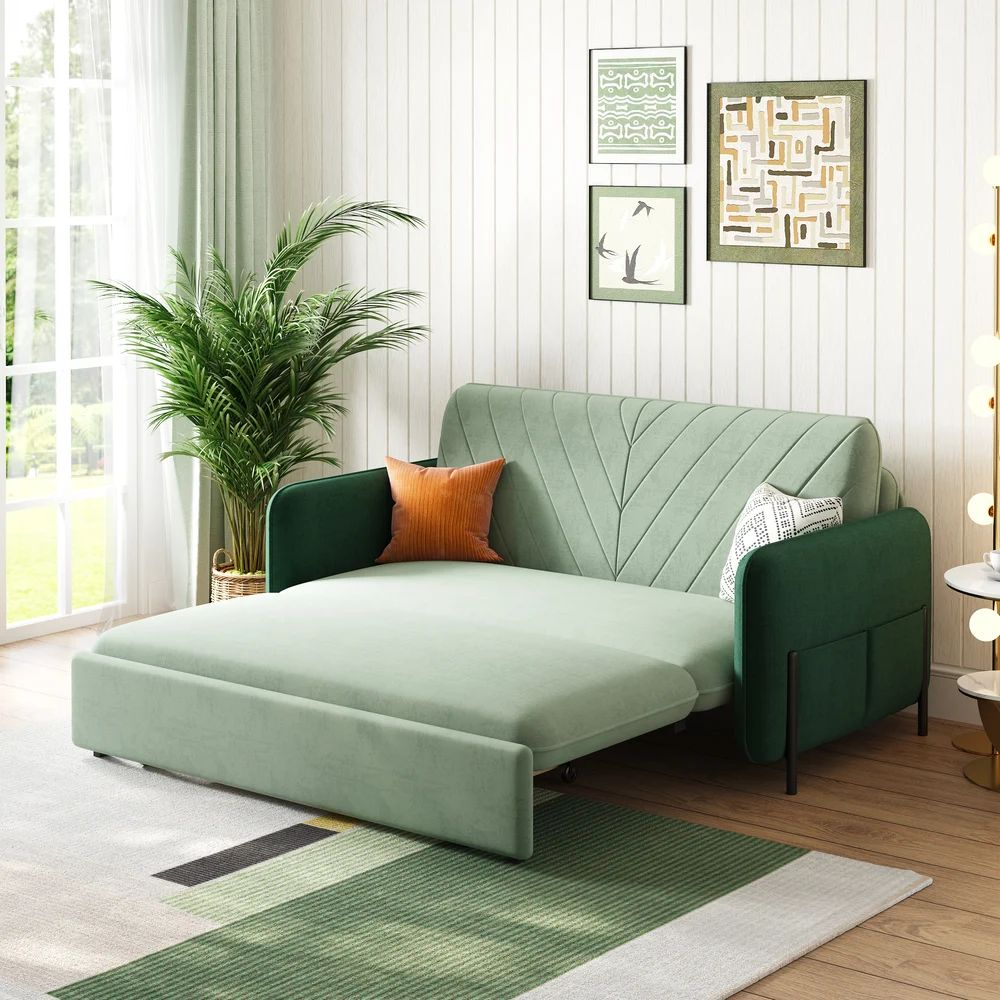
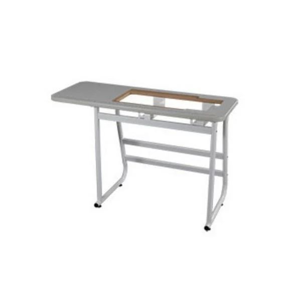

Cosa voglio
- Un divano letto davvero comodo come letto, senza molle e sbarre.
- Matrimoniale, perché ci dorma una coppia. Probabilmente aggiungerò un coprimaterasso in schiuma, perché i materassi dei divani letto sono sempre troppo sottili.
- Il mio angolo cucito: un piccolo secrétaire che uso per cucire e che si chiude con dentro tutto l'occorrente, con accanto un tavolino per la macchina da cucire.
- Stoffe e cartamodelli nell'armadio.
Divano letto

Ispirazione salvata

Ispirazione salvata

Ispirazione salvata
Angolo cucito

Ispirazione salvata

Ispirazione salvata